Blog de pokemon en estado beta, sobre info general y una mini pokedex.
Pokémon es una franquicia de medios creada en 1996 por Satoshi Tajiri, centrada en criaturas ficticias llamadas "Pokemon". Los jugadores asumen el rol de entrenadores que capturan, entrenan y combaten con estas especies inspiradas en animales y mitología.
Actualmente existen más de 1000 especies únicas distribuidas en diez generaciones. El objetivo principal es completar la Pokédex, derrotar líderes de gimnasio y convertirse en campeón de la liga, una fórmula exitosa en videojuegos, anime y cartas coleccionables.
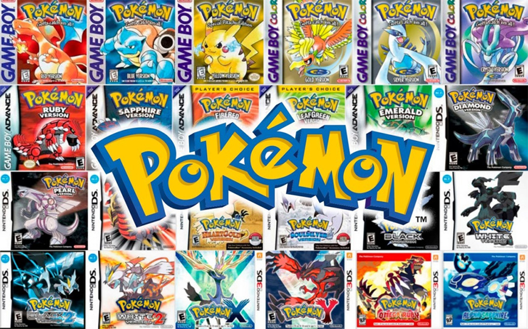
Las generaciones de videojuegos de Pokémon se dividen en nueve etapas principales que introducen nuevas regiones, mecánicas y criaturas.
Iniciada con Pokémon Rojo, Verde, Azul y Amarillo en Game Boy, con 151 Pokémon.
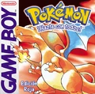
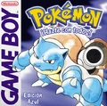
Formada por Pokémon Oro, Plata y Cristal en Game Boy Color, añadiendo 100 Pokémon y el ciclo día/noche.
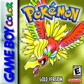
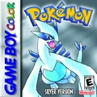
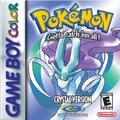
Compuesta por Pokémon Rubí, Zafiro y Esmeralda en Game Boy Advance, junto a los remakes Rojo Fuego y Verde Hoja.
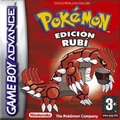
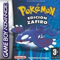
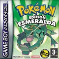
Integrada por Pokémon Diamante, Perla y Platino en Nintendo DS, introduciendo la separación de ataques físicos/especiales.
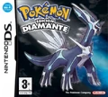
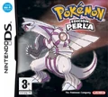
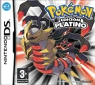
Conformada por Pokémon Edición Negra y Edición Blanca (y sus secuelas directas) en Nintendo DS.
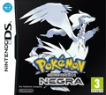
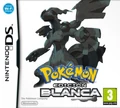
Presentada en Nintendo 3DS con Pokémon X y Pokémon Y, además de la llegada de las megaevoluciones.
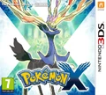
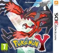
Formada por Pokémon Sol y Luna en Nintendo 3DS, que suplantaron los gimnasios tradicionales por las pruebas insulares.
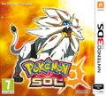
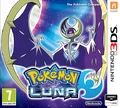
Abierta en Nintendo Switch con Pokémon Espada y Escudo, enfocándose en combates a gran escala con Dinamax.
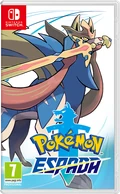
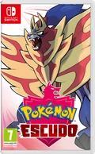
Estrenada en Nintendo Switch con Pokémon Escarlata y Púrpura, apostando por primera vez por un mundo completamente abierto.
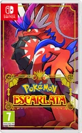
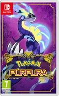
Es una enciclopedia electrónica portátil de alta tecnología utilizada en el mundo ficticio de Pokémon, que los entrenadores llevan consigo para registrar automáticamente las fichas de las diversas especies Pokémon que encuentran durante su viaje. Originalmente diseñada para los primeros 151 Pokémon, su base de datos se ha actualizado a lo largo de las generaciones para incluir hasta 1.025 especies actuales
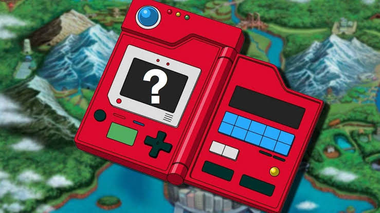